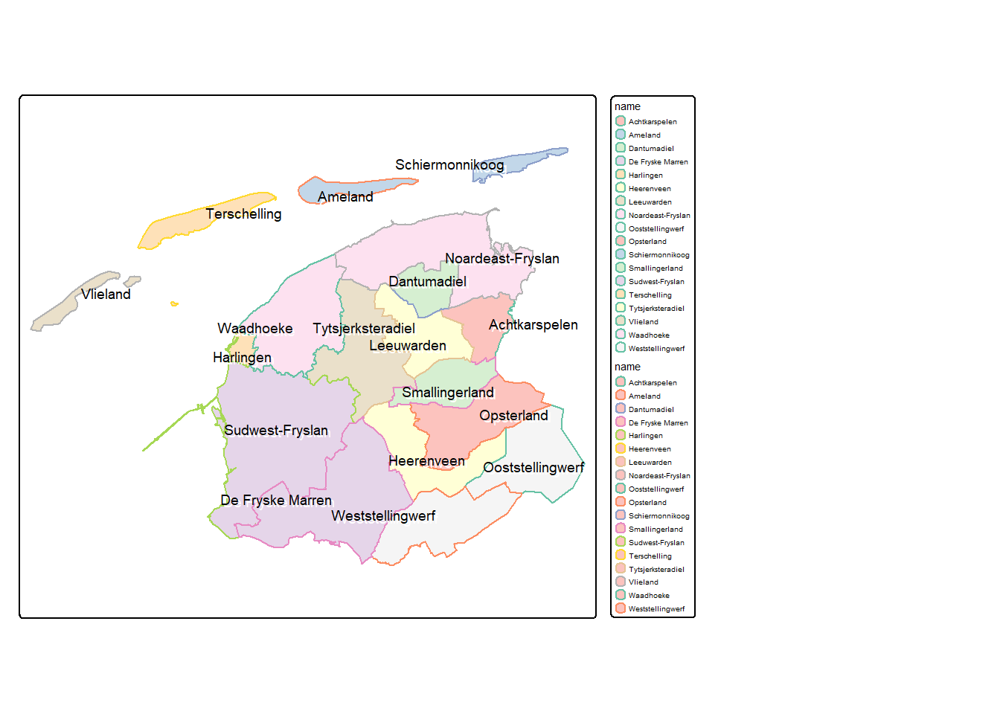

My favourite mapping package just released a major update! In this post I discuss the changes made as they relate to my work, and provide some tips and tricks I have learnt so far when migration from Version 3.0 to Version 4.0.
1 Introduction
The tmap package is one of my all time favourite R packages, and this latest update only solidified this opinion. I highly recommend that you check out the main page here, and take the time to read over some of the documents in each of the tabs.
As of the 27th of January, 2025, tmap version 4.0 was released, and with it came some BIG changes. The authors have done a great job making sure that the update is backwards compatible with your current code, however moving forward it is very important to start doing things the new way, as the old way will no longer be receiving updates.
One of the most impactful updates in my opinion, is changes to the syntax used within a lot of the core functions. This new syntax makes things easier to understand, cleaner, and provides greater flexibility in the creation of your maps. However it can be a confusing journey to undergo the transition. You will find that for a lot of the old v3 code there are now warnings/pop-up messages to help you with the transition, but there are a few things that slip few the cracks and I think it is sometimes just easier to see some examples.
Below I run through how my code for making maps using tmap used to look, and then discuss the changes that have happened and how things look now!
Note
New datasets have also been added for demonstration purposes as well as the ability to extent tmap (to do things like map very unique spatial data types, or creating map overlays in a 3D environment). We won’t be covering those in this blog, but they are very interesting in their own right.
2 How things Used to Look
Note
For the purposes of this blog I will assume a basic understanding of the tmap package and won’t be explaining in detail what each function is/does.
Right, so in version 3.0, how did things look? Well, if I’m honest they looked a little messy. I found that there was only a moderate level of consistency between the arguments in each function, and that arguments within a function that matched together didn’t always make that fact obvious. For example, lets look at the arguments in the tm_polygons() function:
Code
tm_polygons(col, border.col, alpha, palette, legend.show, ...) #There are many more arguments in `tm_polygons()` than what I have listed, but the general idea remains the same for the rest.
… seems fine I guess. The arguments make sense, it looks like col would affect the colour of the polygon, and border.col would affect the border colour of the polygon. But what if I now add in the tm_borders() function:
Code
tm_borders(col, ...)
The two functions share the argument col. F tm_polygons() we are pretty sure that col affects the colour of the polygon, however this tm_borders() function sounds like it has been written specifically for the borders of polygons only… So now we need the additional context of knowing that “col” in tm_polygons() changes the colour inside the polygon, but in tm_borders() changes the colour of the border of the polygon. (Technically we could guess this from contextual clues such as how tm_polygons() also has a “border.col” argument but tm_borders() does not). Confusing! Moving on, lets look at the alpha (transparency) argument. Does that change the transparency of col or border.col? You would have to read the documentation to know that. What about the palette argument? Is that the colour palette for the col or border.col argument?… Extra confusing. But it gets worse! There is only one palette argument, so how do you change the palette for the inside of the polygon independently to the palette for the border of the polygons. You can’t, so thats where tm_borders() function comes in. Just making the conflict between col more obvious. Arrgh!
Enough ranting, lets look at a worked example of a map made using tmap version 3.0:
Code
#extract a subset of dat from the dataset provided with the tmap packageexample_data <- NLD_muni |>filter(province =="Fryslan")#create a map using the version 3.0 syntaxv3_map <-tm_shape(example_data) +tm_polygons(col ="name", border.col ="black", alpha =0.8, palette ="Pastel1", legend.show = T) +tm_text("name", shadow = T, auto.placement = T, size =0.6) +tm_shape(example_data) +tm_borders("name") +tm_layout(legend.bg.color ="white", legend.frame.color ="black", asp =1.1,legend.outside =TRUE)
Again. Overall it doesn’t look too bad, with enough patience we can piece together what things probably do, and by trial and error we can confirm our ideas. However, it is when this code is compared to the new code that the short comings become apparent.
By the way, here is what the map produced by this code looks like:
Code
#print the mapv3_map
3 How Things Look Now
Compared to Version 3.0, the new syntax available with tmap version 4.0 is much more consistent, concise, and also somehow does more with less. For example, lets look at the arguments in the tm_polygons() function again, right now we will just replace 1 to 1 the arguments we looked at before:
Code
tm_polygons(fill, #this was "col" col, #this was "border.col" fill_alpha, #this was "alpha" fill.scale, #this was "palette" fill.legend, #this was "legend.show" ...)
At first glance this doesn’t seem a whole lot better, there are now just a lot of “fill” arguments. But lets have a look at tm_borders() now:
Code
tm_borders(col, #this was "col", and still is "col" ...)
Right away we can see the first problem has been addressed. col now always refers to the colour of the line/outline/border, whereas fill always refers to the inside/fill of the shape. Secondly, the confusion around alpha has been removed, we can see that alpha is now fill_alpha, but even cooler, there is actually also a col_alpha now, the alphas’ are independent! The same logic has been applied to palette, which is now fill.scale (too detailed to explain that change right now), and the legend arguments, which now have “fill” in front of them. So what we have now is something like this:
Code
tm_polygons(fill, #what variable defines the "fill" of the polygons fill.scale, #what palette, breaks, style, should the be used to colour the polygons fill.legend, #do you want a legend? What should it look like for the fill variable fill.free, #should the scale be free for multiples (facets etc.) fill_alpha, #how transparent should the fill colour be col, #what variable defines the "col" (border) of the polygons col.scale, #what palette, breaks, style, should the be used to colour the borders col.legend, #do you want a legend? What should it look like for the col variable col.free, #should the scale be free for multiples (facets etc.) col_alpha, #how transparent should the border colour be ...)
It couldn’t be more obvious what each argument does now. Lets now make the same map as above, but this time with the version 4.0 syntax:
Code
#create a map using the version 4.0 syntaxv4_map <-tm_shape(example_data) +tm_polygons(fill ="name", fill.scale =tm_scale_categorical(values ="brewer.pastel1"),fill.legend =tm_legend(show = T),fill_alpha =0.8,col ="name",col.scale =tm_scale_categorical(values ="brewer.set2"),col.legend =tm_legend(show = T)) +tm_text("name", size =0.6,options =opt_tm_text(shadow =TRUE, point.label =TRUE)) +tm_layout(legend.bg.color ="white",legend.frame.color ="black",legend.outside.position =tm_pos_out("right", "top"),asp =1.1)
Two things are obvious in this code.
Which arguments should be associated with each other
The code looks slightly more verbose, but this is due to less assumptions by the functions, and more explicit directions by me
Side note, you may have also noticed I have changed the structure of my code. This is purely to assist in determining which arguments match together.
Here is what the map produced by this code looks like:
Code
#print the mapv4_map

Ignoring the fact that for both examples these aren’t the most visually appealing maps, it is now very easy to isolate exactly what each argument does and how we can adjust different aspects of the map. Alongside the changes surrounding the fill and col arguments, some other changes include:
The arguments: shadow = TRUE, and auto.placement = TRUE, have been nested under the new argument options, which has its own helper function opt_tm_text(). (auto.placement has also been changed to point.label). +
More helper functions have been added such as the afor mentioned opt_tm_text(), the various scale helpers tm_scale_..., and functions for positioning things such as tm_pos_out.
I never used to really use the helper functions before this update, but they really do make things easier. For a deeper dive on these, check out my other blog post: Making Beautiful Maps in R
4 A Visually Appealing Map
Okay lets be honest, I’ve been doing a lot of posturing without actually creating a map that is even remotely visually appealing. Thus, lets produce a map that is actually not half bad! Here is one I prepared earlier:
Note
There is a lot of code that happens to produce this map, if you’re interested in learning whats going on, I break it down in detail over in my other blog post: Making Beautiful Maps in R
Beautiful Map of Netherlands
That looks pretty good, right?
5 Some Other Changes
Before I’m done, I’d like to drop a few more findings. Not only is the syntax of version 4 better, or the consistency improved, or just the visuals of the maps better. But the method for a bunch of other aspects has been improved as well. This includes things such as mapping raster data types, and faceting maps. Lets cover both at once!
Before the update this is how I used to create a faceted map of rasters (noting this code won’t work right now as the data isn’t available). I had to create a map for each year of data individually, then keep track of which map I was on. For the first map I created a legend, and for all other maps I didn’t create a legend. Finally, I had to stitch all of these maps together, and then I could save the result.
Code
#using unique regionsfor (i in n3_marine_names) {#filter all basins by region region_basins <- n3_marine_region |>filter(Region == i)#get the associated basins basins <- n3_basins |>filter(Region == i)#create counter for j loop count <-0#using years vector created by data sourcing scriptfor (j intime(n3_dhw_5y)){#track counter count <- count +1#mask to the specific region and year single_year_region <-trim(mask(n3_dhw_5y[[time(n3_dhw_5y) == j]], vect(region_basins)))#for the first map make a legendif (count ==1){#plot map <-tm_shape(single_year_region) +tm_raster(palette = dhw_cols, breaks =c(1:6), labels = dhw_lab) +tm_shape(qld) +tm_polygons(col ="grey80", border.col ="black") +tm_shape(region_basins, is.master = T) +tm_borders(col ="black") +tm_shape(basins) +tm_polygons(col ="grey90", border.col ="black") +tm_layout(asp =5, legend.show = F, main.title =year(time(single_year_region)), main.title.position ="centre")#save the mapassign(glue("map{count}"), map)#make a legend map legend_map <-tm_shape(single_year_region) +tm_raster(palette = dhw_cols, breaks =c(1:6), labels = dhw_lab, legend.reverse = T, title ="Coral bleaching likelihood \n and number of DHW's") +tm_layout(legend.only = T, legend.title.size =3,legend.text.size =1.6, legend.position =c(0, 0.3))#otherwise, no legend } else {#plot map <-tm_shape(single_year_region) +tm_raster(palette = dhw_cols, breaks =c(1:6), labels = dhw_lab) +tm_shape(qld) +tm_polygons(col ="grey80", border.col ="black") +tm_shape(region_basins, is.master = T) +tm_borders(col ="black") +tm_shape(basins) +tm_polygons(col ="grey90", border.col ="black") +tm_layout(asp =5, legend.show = F, main.title =year(time(single_year_region)), main.title.position ="centre")#save the mapassign(glue("map{count}"), map) } } #arrange into two rows facet_map <-tmap_arrange(map1, map2, map3, map4, map5, nrow =2)#edit variable name for better save path i_lower <-tolower(gsub(" ", "-", i))#save the map as a pngtmap_save(facet_map, filename =glue("{output_path}/plots/{i_lower}_dhw_fyear-{current_fyear}-to-{current_fyear-4}.png"))#save the legend separatelytmap_save(legend_map, glue("{output_path}/plots/{i_lower}_dhw_fyear-{current_fyear}-to-{current_fyear-4}_legend.png"))}
And this is how I create them now. The change is purely down to the introduction of the tm_facets_... group of functions, which are modelling after the ggplot2 facet_wrap functions if you are familiar. Without a doubt, much easier, much simpler, much quicker to understand.
Code
#plotfacet_map <-tm_shape(all_year_region) +tm_raster(col.scale =tm_scale_intervals(values = dhw_cols, breaks =c(1:6),labels = dhw_lab),col.free =FALSE,col.legend =tm_legend(title ="Coral bleaching likelihood and number of DHW's")) +tm_shape(qld) +tm_polygons(fill ="grey80",col ="black") +tm_shape(region_basins, is.main = T) +tm_borders(col ="black") +tm_shape(basins) +tm_polygons(fill ="grey90", col ="black") +tm_layout(panel.labels =year(time(n3_dhw_5y))) +tm_facets_hstack()#save the map as a pngtmap_save(facet_map, filename =glue("{output_path}/plots/{i_lower}_dhw_fyear-{current_fyear}-to-{current_fyear-4}.png"))
6 Caveats
This blog has been written documenting some of the changes that have occurred with the R package “tmap”. I explain how some of the changes have impacted my work, and cover a few instances where the update from v3 to v4 might not be so obvious. However! In no way am I pretending to understand all of the changes that have occurred. I would highly recommend visiting the main tmap page here.
Thanks For Reading!
If you like the content, please consider donating to let me know. Also please stick around and have a read of several of my other posts. You'll find work on everything from simple data management and organisation skills, all the way to writing custom functions, tackling complex environmental problems, and my journey when learning new environmental data analyst skills.